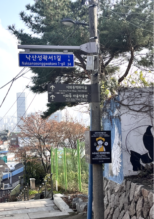

준비물
사실 '한양도성길 낙산구간'은 그냥 정말 가볍게 산책하기 좋은 길이고
오래걸리지도 않아서 크게 준비할건 없었어요.
하지만 이날은 낮에
날이 더워서 저희는 음료를 사들고 야심차게 출발했답니다.
필수
준비물이라면 물과 핸드폰 정도가 있을 것
같아요! 길이 정말 예뻐서 사진찍기 필수거든요.
세부코스
한양도성길의 낙산구간은 혜화문에서 시작하여
낙산공원을 지나 이화마을을 거쳐
흥인지문까지 이어지는데요!
먼저 혜화문에서 출발해서 낙산공원 놀이마당까지 걸어가는 구간은
산책로로 되어 있어요. 그래서 걷다보면 낙산의 아름다운 자연 풍경을
마음껏 감상할 수 있답니다.
낙산공원에는 놀이기구도 있고 휴식하기 좋은 공간도 있어서, 가족이나
친구들과 함께 놀러가기에 딱 좋아요.
그리고 이어서 이화마을을 지나가는데, 여기는 한옥들이 멋지게 보존되어
있고 벽화도 있는데, 이런 분위기를 느끼면서 산책하는 재미가 있는
곳이에요.
마지막으로 흥인지문까지 도착하면 한양도성의 마지막 장소를 마주할 수
있답니다!
일정
계획된 일정은 먼저 4시쯤 한성대입구역에서 만나 1시간정도
걷고 근처에 있는 카페와 맛집을 즐긴뒤,
연극을 감상하기로 했답니다.
하루전날 J인 것 처럼
계획도 세워 보았어요.
이곳을 방문하실 분들은 저희 코스를 따라오시면 재미있게 즐기실 수
있을거에요!
교통편
한성대입구역(4호선) 4번출구에서 출발하면 도보로 약 3분
거리에 혜화문이 있어요.
거기서 한양도성길을 따라서
동대문역(1ㆍ4호선) 6번 또는 7번 출구로 향하면
흥인지문까지 도착할 수 있어요.
만약 혜화역(4호선)에서 시작한다면 2번출구로 나와서 약 20분 도보로
낙산공원 공원입구까지 이동합니다.
그리고 거기서 다시 5분 정도 걸으면 낙산의 정상까지 갈 수 있답니다.
이렇게 가시면 한양도성길을 편하게 따라다닐 수 있어요.
좀 더 편리한 이동을 위해 대중교통을 이용하는 것이 좋을 것 같아요!
이렇게 다녀오세요!
이제부턴 저희가 다녀온 길을 따라 '한양도성길'을 알차게
즐기는 법을 알려드릴게요!
유용하고 재밌는 정보들이니 차근차근
따라와주세요~!!
저희는 한성대 입구에서 만나 바로 혜화문 건너편에 위치한
길 입구를 따라 들어갔어요! 사실 혜화문이라는게 존재하는 지도 모르고
살아왔는데
새삼스럽게 예뻐보이고 날씨도 너무 좋아서, 나오길 잘했다는 생각이
들더라구요.
길을 따라가다보면 밑의 사진과 같은 길들이 쭉이어지는데 오르막도 있고..
계단도 있어서 조금? 힘들었지만 오랜만에 나온 산책이라 기분좋게
올랐습니다.
또 보이는 풍경이 좋아서 놓칠게 하나도 없었어요!
오르막과 계단을 좀 더 견디다보면 낙산공원을 가리키는 표지판이 나와요!
거기서 좀 더 가면 예쁜 뷰를 감상할 수 있는 언덕을 지나고 작은 카페를
지나면 낙산공원의 입구를 지나 낙산공원으로 들어설 수
있습니다!
저 옆에 보이는 성곽들이 정말정말 예뻤어요.
사람도 많지 않았고 개나리도 피어가는 날이었어서 너무 예쁘고 마음까지
화사해지는 느낌이었답니다.
이 기회를 놓치지 않고 열심히 사진도 남겼는데
다들 낙산공원에서는 꼭꼭! 예쁜사진 남기셨으면 좋겠어요! 풍경이 정말
아름답거든요.
공원에 상주하는 고양이도 귀여워해주고! 소원 좀 들어달라구 돌도
야무지게 쌓아봤습니당~
낙산공원을 지나서 저희는 이화벽화마을로 향했습니다!
여긴 실제로 주민분들이 사는 곳이라 최대한 조용히 지나가려고
노력했어요!
벽화와 한옥이 어우러져서 구경하기 정말 좋은 마을이었어요😆

마을을 구경하다 덥기도 하고 살짝 쉴겸 카페를 들렀어요.
저희가 방문한 카페는 카페 '산'이라는 곳이었는데요.
예쁘게 꾸며져있고 디저트도 맛있어서 만족스러웠고 방문후기를 남기면
연극공연티켓도 주더라구요. 다들 꼭 리뷰쓰세요!
카페에서 인터뷰 겸 시간을 보내고 나니 저녁 먹을 시간이 다되서 중간에
이화마을을 통해 내려와 저녁을 먹었습니다!
맛집을 미리 알아보고 갔는데요! 근처에 솥밥집이 유명하더라구요.
웨이팅이 있을까봐 걱정했는데 다행히 사람이 많지 않아 정말 맛있게
먹었습니다. 이 솥밥집
'도도야'
왕왕추천드립니다!
관자솥밥도 연어솥밥도 둘다 너무 맛있었구 대신
솥밥이라 나오는데 시간이 조금 걸리니 참고하세요!
다음 코스는 '연극'입니다!
다들 아시죠? 혜화! 하면 연극!인거 혜화까지
갔는데 대학로 연극을 안보면 너무 아쉬우니까요ㅎㅎ
전날 미리 예매한 뷰티풀라이프 보러갔는데요.
슬프다고 하도
자자해서 걱정했지만 다행히 울진않았습니다... 그래도 연기자분들이
연기를 너무 잘하셔서 몰입해서 보느라 시간가는 줄도 몰랐답니다.
연극이 끝나고 저희는 다시 한양도성길로 향했습니다! 아직 끝을
못봤잖아요?
다시 흥인지문을 향해 걷다보니 한양도성박물관 도 보이고
정말 잊지못할 예쁜 성곽길도 볼수 있었어요.
정말 이 야경은 사진에 담기지 않을 정도록 너무 아름다웠어요!!
흥인지문과 어우러진 이 길이 지금도 생생합니다.
학교에만 있다가 오랜만에 나간 나들이라 너무 설레고 행복한
기억이었습니다.
다들 '한양도성길 낙산구간' 한번씩 꼭 가보시길 바랄게요!! 아름다운
흥인지문 야경을 마지막으로 길 소개는 마치겠습니다!